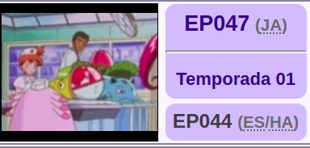
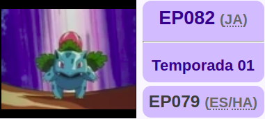
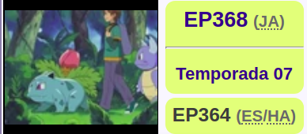
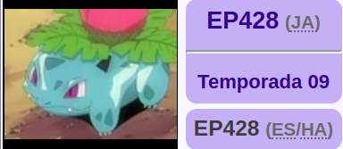
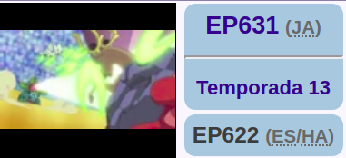
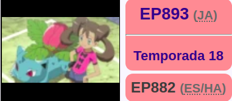
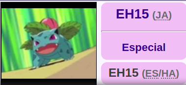

Aparición en el anime
Ivysaur debutó en la Operación A Chansey , donde fue uno de los Pokémon heridos que fueron llevados a la clínica.
Un Ivysaur apareció en The Ultimate Test , donde fue uno de los Pokémon propiedad del instructor del examen de ingreso de la Liga Pokémon .
Ivysaur estaba entre los numerosos Pokémon que se acercaron al mar al sentir la perturbación causada por Lawrence III en The Power of One .
Ivysaur múltiple apareció en la secuencia inicial de Destiny Deoxys .
El Ivysaur de Jeremy apareció en un flashback en Weekend Warrior .
¡Ivysaur de un coordinador apareció en Playing the Performance Encore! . Estaba participando en el Battle Stage of the Daybreak Contest junto con un Togetic .
¡Un Ivysaur apareció en Loading the Dex! Como una silueta que Rotom trajo.
El Ivysaur de un Entrenador apareció en I Choose You! . Fue visto en un Centro Pokémon durante la llamada de Ash a su madre, donde Pikachu procedió a hacer muecas.
¡Un Ivysaur apareció en A Dream Encounter! En un video publicitario de Aether Paradise . ¡Reapareció en apariencias engañosas! ¡y no ignore el pequeño bochorno! .
|  | Es uno de los Pokémon malheridos tras sufrir un accidente y debe ser atendido en un hospital para personas, ya que el Centro Pokémon estaba demasiado ocupado para atenderlo. |
 |
Los Bulbasaur del Jardín Misterioso pudieron evolucionar gracias a un Venusaur. |
 | Apareció en la Liga Pokémon cuando este derrota a Sparky, el Pikachu de Ritchie. |
 | Jimmy tiene uno. También tiene un Charmeleon y un Wartortle. |
 | Se sabe que Jeremy tiene a su Venusaur desde que era un Ivysaur. |
 | Aparece uno luchando junto a un Togetic en la ronda de batallas del Concurso Pokémon de Amanecer contra un Magcargo y un Stantler. |
 | Es el Bulbasaur de Shauna/Xana evolucionado. Aparece por primera vez evolucionado en el EP893, lucha junto a Eevee en un combate 2 VS 2. |
 | Es el Pokémon de Crystal. Combatió contra Butch y Cassidy. Conoce látigo cepa, hoja afilada, rayo solar, recurrente, remolino y danza pétalo. |